La fenêtre Contenu affiche le document sélectionné dans le Table des Matières.
Une publication HTML est une publication qui a été créée à l'aide du générateur HTMLSet,
qui utilise un package ZIP de fichiers HTML comme source d'entrée. Les publications HTML
sont visibles dans Pinpoint (par exemple, les publications iFIM), cependant, certaines
fonctionnalités sont désactivées pour ces types de publications. Les icônes de l'en-tête du
volet Contenu ne sont pas disponibles. Tous les contrôles, tels que la
navigation dans les pages et la recherche, se trouvent dans la publication HTML elle-même.
Par example:
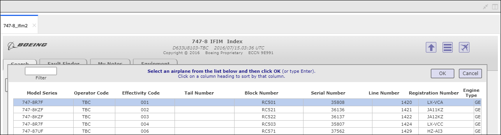
Ci-dessous, liste des boutons / fonctions qui sont pertinentes pour la Contenu et décrivez le différents types de contenu sont gérés par l'application.
Les Boutons et Fonctions
| Eléments | Description |
|---|---|
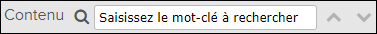 Trouvez dans l'icône du document |
Cliquez sur l'icône contenant une loupe pour ouvrir un champ de recherche pour
effectuer une recherche dans le document sélectionné. Les résultats sont surlignés
et vous pouvez utiliser les boutons flêchés pour naviguer d'un résultat à l'autre.
Remarque : Cette fonctionnalité n'est pas disponible pour les publications
HTML.
|
| Afficher les métadonnées | Cette icône n'est disponible que si le module de données possède des métadonnées générées par le générateur S1000D. Cliquez sur cette icône pour afficher les métadonnées du module de données. |
| Naviguez jusqu'au document suivant / précédent, conformément à la table des matières. S'il n'y a pas de document suivant / précédent, le bouton n'apparaît pas. | |
|
|
Utilisez ce menu déroulant pour basculer entre une révision temporaire et
publication originale. Remarque : Ce menu déroulant n'apparaît que lorsqu'une publication
a une révision temporaire qui a été ajoutée via Data Manager.
Remarque : Cette
fonctionnalité n'est pas disponible pour les publications HTML.
|
|
Remarque : Vous devez avoir l'autorisation de Can create or remove restricted
links pour créer des liens restreints.
Après avoir sélectionné un S1000D module de données ou une tâche iSpec2200 cliquez sur cette icône pour ouvrir la boîte de dialogue Création de liens restreints afin de créer un lien. Reportez-vous à Créer des liens restreints. |
|
| Allumer authoring mode | Remarque : Vous devez avoir l'autorisation pour Peut créer du contenu le
contenu privilège pour accéder au mode de création dans Pinpoint. Utilisateurs du
système l'organisation n'a pas accès à la fonctionnalité de création.
Cliquez sur cette icône pour entrer en mode création.Remarque : Cette
fonctionnalité n'est pas disponible pour les publications HTML.
|
 Contenu lié à l'AMM
Contenu lié à l'AMM |
Cliquez sur l'icône pour remplir automatiquement un nouveau champ de recherche
de code dans le volet Recherche en texte intégral avec une
valeur de code ATA à 6 chiffres à partir du numéro de bloc de page AIPC. Le système
effectuera une recherche parmi les publications AMM et AMP dans la bibliothèque et
affichera les résultats dans les résultats de la recherche. Remarque : S'affiche
uniquement lors de l'affichage d'un schéma de catalogue de pièces de maintenance
dans Pinpoint.
Remarque : Si la recherche est déclenchée sur une bibliothèque
qui ne contient pas de publication AMM et AMP, le système affichera un message
d'avertissement.
|
| Cliquez sur cette icône pour revenir à l'URL de la page d'accueil de la
publication. Pour plus d'informations sur l'URL de la page d'accueil, voir Métadonnées de Publication Remarque : S'il n’existe pas de
page d’accueil configurée pour la publication, une page par défaut
affiche.
|
|
| Cliquez sur cette icône pour ajouter ce document à vos favoris, pour plus
d’informations, voir Les listes de signets. Remarque : Cette
fonctionnalité n'est pas disponible pour les publications HTML.
|
|
| Lien vers le contenu | Cliquez sur cette icône pour ouvrir le lien GOTO de la page. Pour plus
d’informations sur cette fonctionnalité, voir Copier le Lien GOTO Pinpoint. Remarque : Cette fonctionnalité n'est pas
disponible pour les publications HTML.
|
| Afficher le contenu dans un style ATA | Clique sur cette pour afficher le contenu dans le style ATA ou le style S1000D. |
| Cliquez sur cette icône pour afficher la Liste graphique à côté de la fenêtre Contenu. La liste affiche tous les graphique utilisés dans le présent document. | |
| Ouvrir le contenu dans un nouvel onglet du navigateur | Cliquez sur cette icône pour ouvrir le contenu dans un nouvel onglet de
navigateur. Remarque : Cette fonctionnalité n'est pas disponible pour les publications
HTML.
Remarque : Dans un volet graphique, cliquez sur cette icône pour ouvrir le
graphique dans une nouvelle fenêtre.
Remarque : S'appliquera aux pièces jointes
et au contenu PDF.
Remarque : Le navigateur Web que vous utilisez détermine le
mode d'ouverture du PDF. Par exemple, si votre navigateur Web est configuré pour
ouvrir le document PDF avec Adobe Reader, voilà comment il va
s'ouvrir.
|
| Maximisez la fenêtre Contenu | Cliquez sur cette icône pour passer de l'affichage 50/50 des fenêtres Contenu et Graphique à l'affichage de la fenêtre Contenu uniquement |
| Cliquez sur cette icône si vous souhaitez restaurer l'affichage 50/50 des fenêtres Contenu et Graphique | |
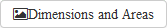 L'icône d'illustration |
Cette icône dans le contenu du document représente une illustration. Cliquez dessus pour la voir Graphique. L'affichage passe en affichage 50/50 des fenêtres Contenu et Graphique. |
| Minimiser la fenêtre Contenu | Cliquez sur cette icône si vous souhaitez minimiser la fenêtre Contenu et faire de la place pour la fenêtre Graphique. |
| Cliquez sur cette icône pour ajouter une pièce jointe (telle qu'une révision
temporaire ou un supplément) au document que vous consultez. Pour plus de détails,
reportez-vous à Ajouter Attachement. Remarque : Cette fonctionnalité n'est pas disponible pour les publications
HTML.
|
|
| Basculer le contenu filtré | Appuyez sur cette icône pour afficher / masquer le contenu filtré. Lorsque la
bascule est activée, l'icône est bleue et les données filtrées sont partiellement
visibles et désactivées. Lorsque la bascule est désactivée, les données filtrées ne
sont pas visibles. Remarque : Si vous affichez du contenu sans données filtrées, l’icône
est désactivée.
Faire référence à La fenêtre filtre pour plus de détails. |
| Cliquez sur cette icône pour ouvrir le Formulaire de commentaires
qui permet aux utilisateurs d'envoyer un document de commentaire (format
html) au département Pubs Tech pour demander un changement ou signaler un problème
dans le contenu. Pour plus de détails, voir Remarque. Remarque : Cette fonctionnalité n'est pas
disponible pour les publications HTML.
|
|
| Cet onglet est situé sur le côté droit de la page. Cliquez sur cet onglet pour
ouvrir le volet Annotations dans lequel vous pouvez afficher
les commentaires concernant le document actuel. Pour plus de détails, reportez-vous
à Les Annotations. Remarque : Cette fonctionnalité
n'est pas disponible pour les publications HTML
|
|
| Cet onglet est situé sur le côté droit de la page. Cliquez sur cet onglet pour
ouvrir le volet Remarque : Cette fonctionnalité
n'est pas disponible pour les publications HTML.
|
Affichage des modifications de création dans Pinpoint
Affichage des modifications de création dans Pinpoint permet aux utilisateurs disposant des autorisations appropriées de créer du contenu et de créer des figures pour les manuels iSpec. Cette fonctionnalité s'applique uniquement à des types de documents spécifiques. Faire référence à Création pour plus d'informations.
Affichage des modifications COC (création)
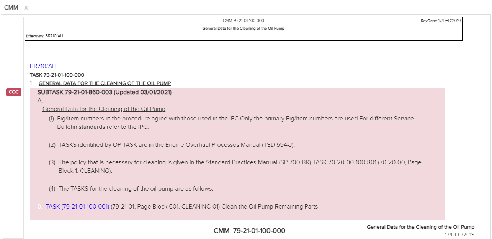
Références de Documents
Les documents peuvent contenir des hyperliens vers d'autres objets, tels que des documents et des illustrations. Les références à d'autres documents apparaissent sous forme de liens hypertexte soulignés en bleu. Lorsque vous cliquez sur une référence de document, ce document s'affiche. Vous pouvez également obtenir un aperçu du document référencé en plaçant le pointeur de la souris sur la référence:

Vous pouvez naviguer dans cette fenêtre de prévisualisation en utilisant la barre de défilement / la souris, mais vous ne pouvez pas suivre les liens.
Passez la souris sur la référence pour obtenir un aperçu
Les procédures DMs et IPD peuvent également contenir des liens vers des objets tels que des pièces, des fournitures, des consommables, etc., comme décrit dans Pop-Up Dialogues.
Lorsque vous cliquez sur une référence de document pour une publication de lien symbolique, la publication d'origine (cible) s'ouvre.
En-têtes de table IPC/IPD
- S1000D
Tableau des pièces IPD dans les publications S1000D2.3, S1000D3.0, S1000D4.0, S1000D4.1, S1000D4.2
- iSpec
Tableau des pièces IPD dans les publications iSpec EIPC/IPD
- A350
Tableau des pièces IPD dans les publications ATA
- C-Series
Tableau des pièces IPD dans les publications ATA
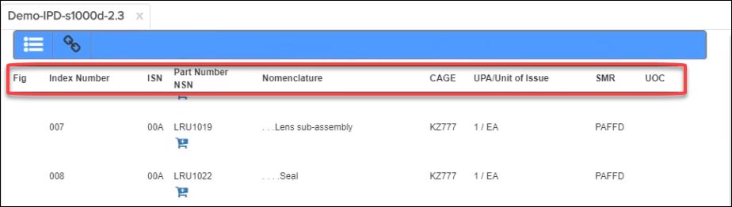
En-tête PC (S1000D)
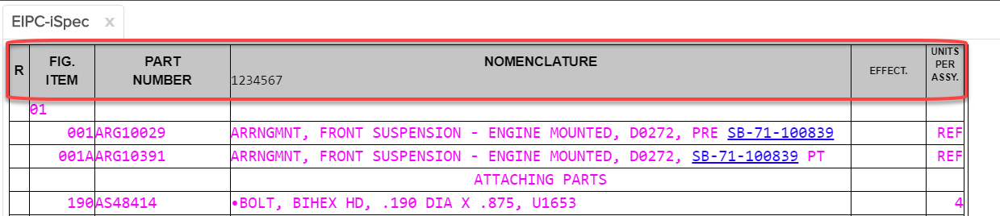
En-tête IPC (iSpec)
Fenêtres contextuelles du panneau d'accès
- Document de planification de la maintenance (MPD)
- Rapport du comité de révision de la maintenance (MRB)
- Programme de maintenance à faible utilisation (LUMP)
- Carte de travail
- IDENTIFIANT NO.
- GARE
- EMPLACEMENT
- TEMPS D'ACCÈS

Fenêtre contextuelle du panneau d'accès
Grand tableau d'affichage (publications SRM uniquement)
Non applicable pour Pinpoint Standalone et Standalone Light.
Lors de l'affichage d'un tableau pour une publication SRM publiée à partir d'un générateur KCA, l'intégralité du contenu du tableau est visible dans le volet de Contenu si le tableau correspond à la zone d'affichage. Si le tableau est plus large que la zone de visualisation, une barre de défilement horizontale est disponible. L'en-tête du tableau reste figé en haut de l'écran lorsque vous faites défiler le contenu.
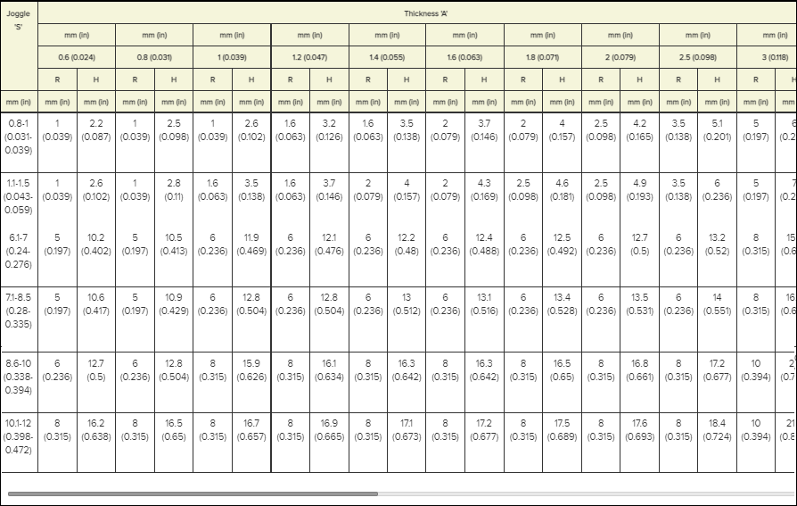
Exemple de grande table
Les Liens vers le catalogSequenceRef
- En déplaçant le pointeur de la souris sur le lien, le module de données IPD s'affiche dans une fenêtre pop-up et fait défiler jusqu'au bon numéro du catalogSequence .
- En cliquant sur le lien, l'utilisateur est dirigé vers la bonne IPD data module et fait défiler jusqu'au bon numéro du catalogSequence.
- En cas de plusieurs cibles du CSN, une liste de cibles s'affiche.
Les Liens vers le Système de Numérotation Standard (SNS)
Les Liens SNS vers des documents ASR SNS, NDT et ESP sont traités comme indiqué ci-dessous:
- En déplaçant le pointeur de la souris sur le lien, le module de données s'affiche dans une fenêtre Pop-up et fait défiler jusqu'au bon document.
- En cliquant sur un lien, l'utilisateur est dirigé vers la page cible.
- En cas de pages cibles multiples pour le lien SNS, une liste de cibles affiche.
Les Liens vers les Figures
- L’hyperlien souligné en Blue (par défaut).
- Le lien souligné en bleu avec une prévisualisation de vignette de l'image au-dessus du texte comme présenté dans l'image ci-dessous.
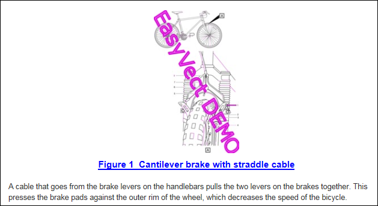
Aperçu de la vignette
La prévisualisation de vignette sera utilisée lorsque le builder aura été configuré pour créer des vignettes de graphique au cours du processus de conversion. En cliquant sur un lien de figure (ou des vignettes) la fenêtre Graphique s'affiche à droite de la fenêtre. Merci de se référer à La fenêtre graphique pour plus d'informations sur les opérations de graphique.
La disponibilité des vignettes a également un impact sur le rendu des liens graphique internes. Ce type de lien affichera la vignette, le titre et le nom de fichier dans une info-bulle lors du survol du pointeur de la souris sur le lien:
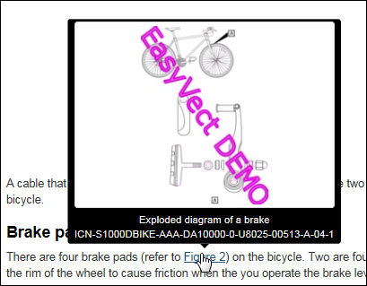
Infobulle sur le lien graphique interne
Merci de se référer à la Flatirons Pinpoint Configuration Guide pour plus de détails sur les paramètres figure de vignettes.
Liens de zone (constructeurs KCA)
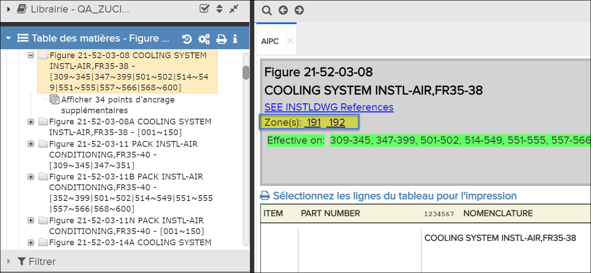
Lien du numéro de zone dans le manuel AIPC
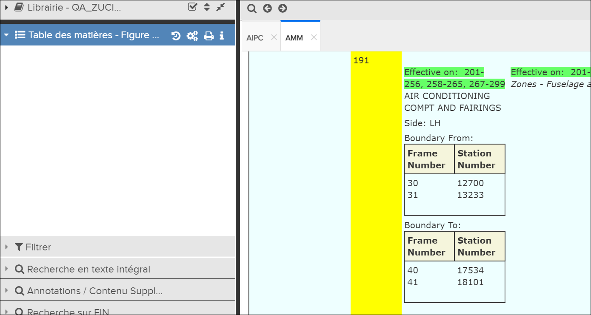
Section de zonage et d'accès dans le manuel AMM
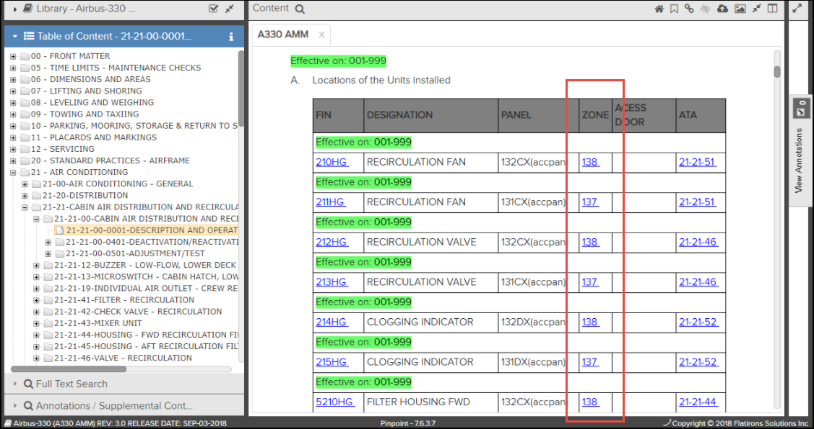
Lien de zone dans le manuel AMM
Liens CML
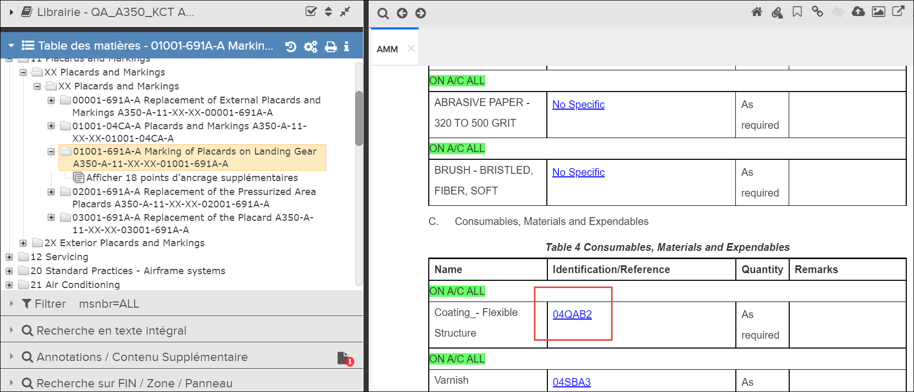
Lien CML dans le manuel AMM
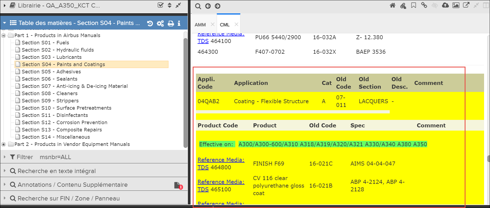
Informations dans le manuel CML
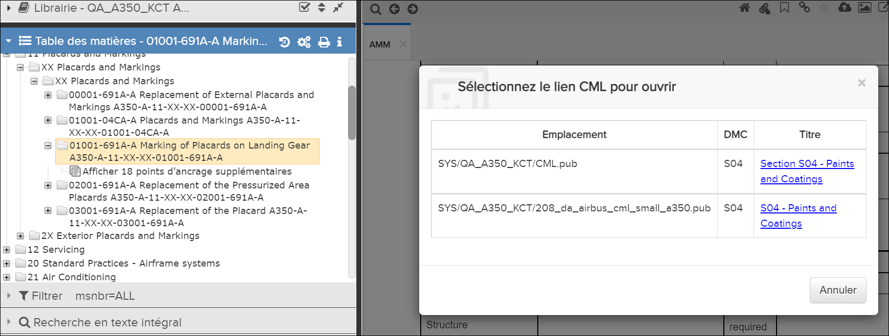
Référence CML dans plusieurs fragments
Liens CSN
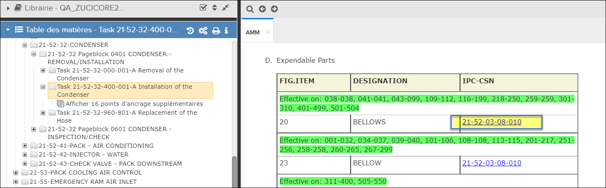
Lien CSN dans le manuel AMM
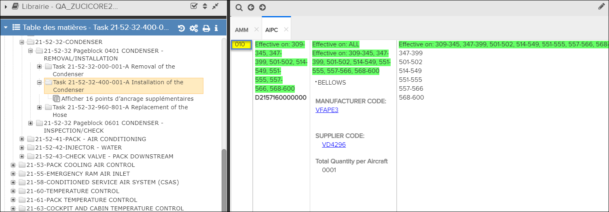
Numéro d'article 010 dans la figure AIPC correspondant au code ATA 21-52-03-08
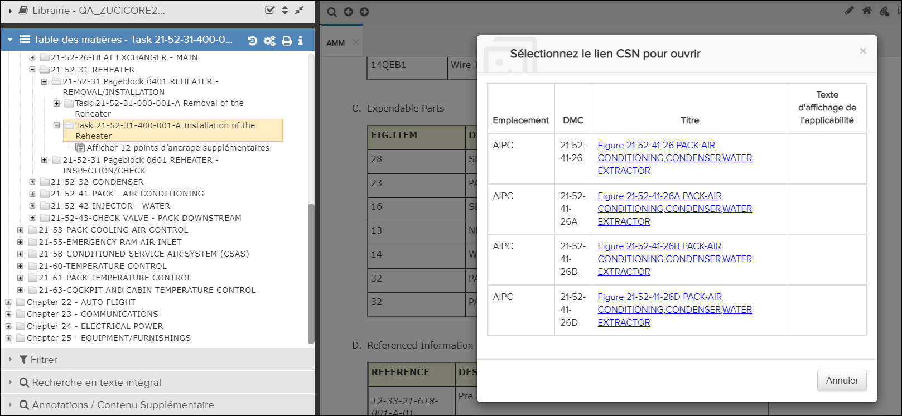
Lien CSN correspondant à plusieurs fragments AIPC
Liens pour Diviser de Gros Fragments
Les plus gros fragments sont divisés en parties afin qu'ils se chargent rapidement dans la visionneuse Pinpoint. Vous pouvez accéder aux parties fractionnées en utilisant les hyperliens fournis. Cela s'applique également aux grands tableaux, aux blocs de pages d' AMM et aux chapitres d'erreurs de TSM.
- Le contenu fractionné est disponible sous forme de nœuds sous la Table des matièrest.
- Cliquez sur un nœud pour l'afficher dans le volet de contenu.
- Cliquez sur le lien "Continue to .. -Part X" en bas pour
afficher la partie suivante à partir du volet de contenu.
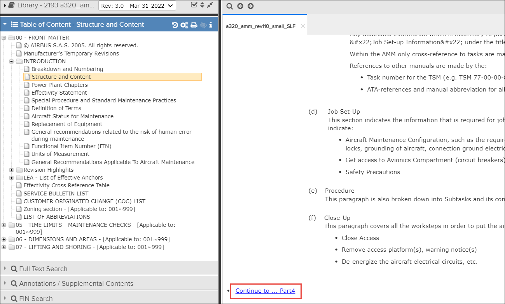
- Cliquez sur le lien "Continuation from.. -Part X" en haut, pour
afficher la partie précédente depuis le volet de contenu.

- Lorsque de grands tableaux sont fractionnés, le contenu du tableau est remplacé par un
lien hypertexte nommé “Click here to see table body”.

- Cliquez sur le lien pour afficher le tableau avec le contenu divisé en son propre fragment.
- Cliquez sur le lien “Continue to…Table Part X” pour afficher la partie suivante du tableau.
- Cliquez sur le lien “Continue from…Table Part 1” pour afficher
la partie précédente du tableau.

- Cliquez sur le lien "Source Fragment" en haut du contenu du
tableau pour revenir au contenu d'origine.

- Cliquez sur ouvrir un fragment d' AMM à partir de la Table des Matières.
- Cliquez sur le lien disponible dans le volet de contenu pour afficher le contenu
fractionné.
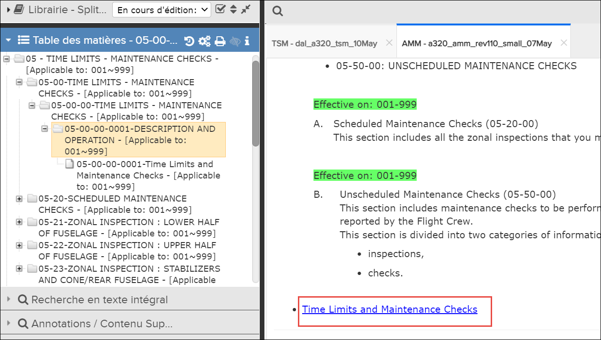
- Cliquez sur le lien “Continue from… Part X” en haut du volet de
contenu pour afficher la partie précédente.
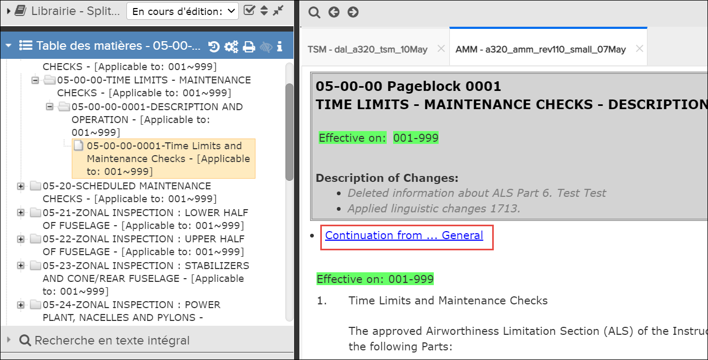
- Cliquez sur n'importe quel chapitre divisé dans un TSM pour afficher la liste des liens du contenu divisé dans le volet de contenu.
- Cliquez sur n'importe quel lien de la liste pour afficher le contenu.
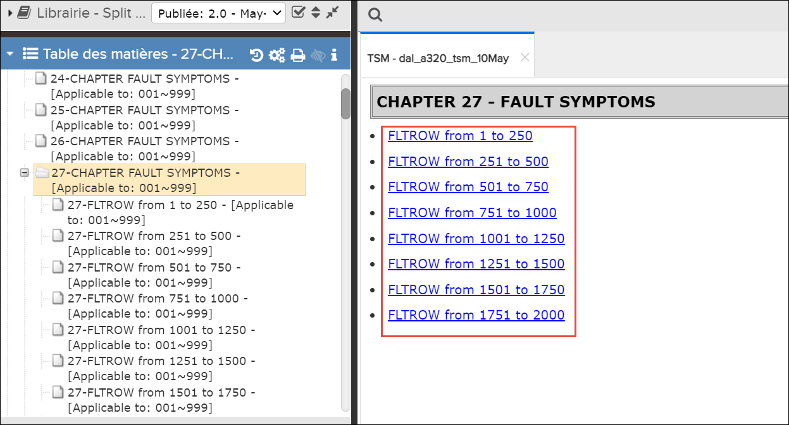
- Cliquez sur le lien ""Continue to .. -Part X" en bas pour
afficher la partie suivante à partir du volet de contenu.
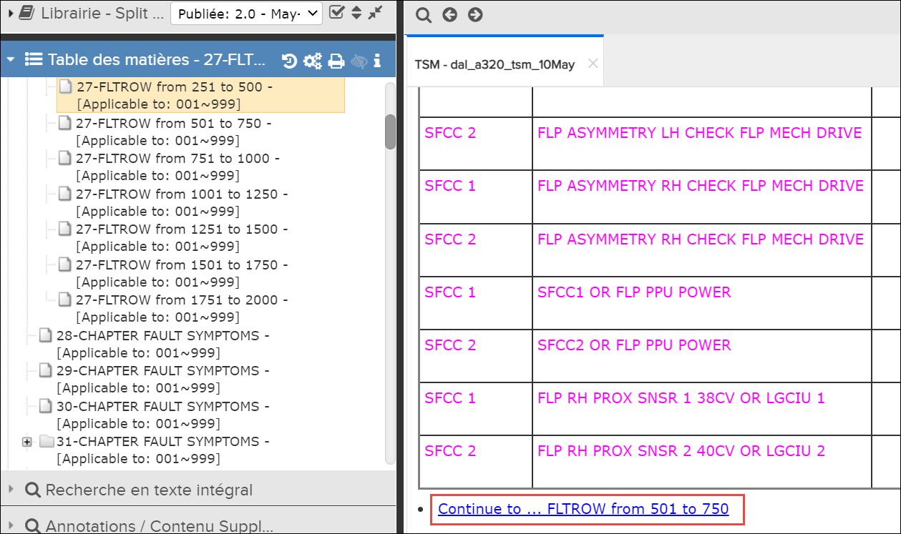
- Cliquez sur le lien "Continuation from.. -Part X" pour afficher
la partie précédente depuis le volet de contenu.
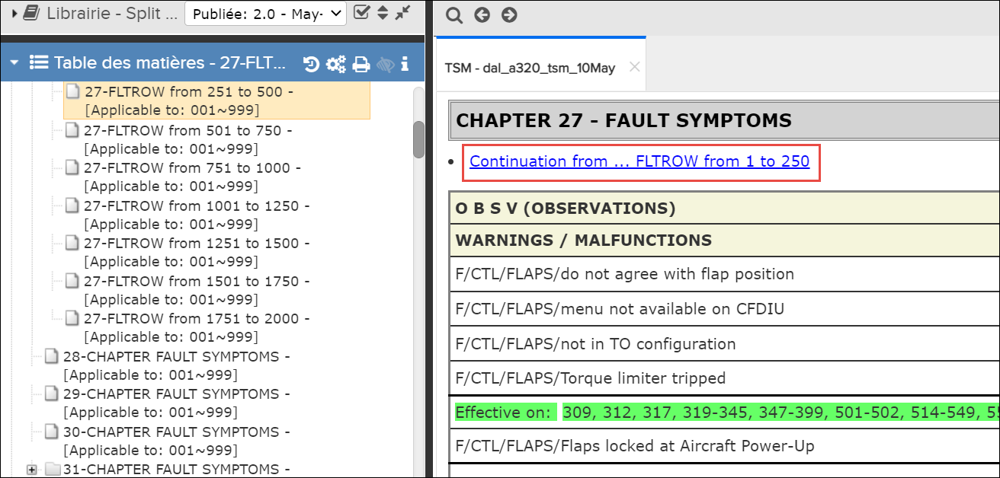
L'onglet Contenu

Les Onglets publications dans la fenêtre Contenu
Ouverture des liens de document
- Ouvrir un lien dans un nouvel onglet
- ouvrir le lien dans une nouvelle fenêtre
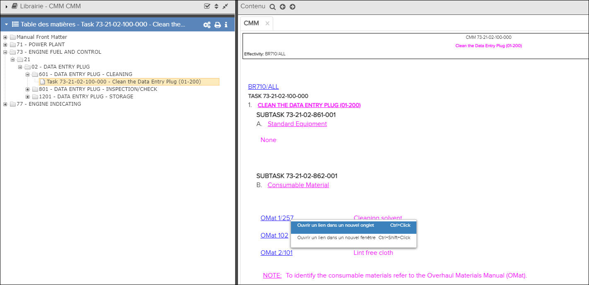
Exemple de lien ouvert
- Le menu contextuel apparaît pour les liens qui suivent:
- Liens de recherche
- Liens de référence internes
- Liens de document
- Liens vers la table des matières Pilules et onglets
- Pour les liens de recherche, lors de la sélection des options dans le menu contextuel, une nouvelle session de l'application Pinpoints'ouvre dans un nouvel onglet / fenêtre , et levolet Recherche en texte intégral est mis au point et les résultats de la recherche s'affichent. Si le résultat de la recherche est cliqué avec le bouton droit de la souris, un menu contextuel apparaît, qui ouvre le document de résultat de la recherche dans une nouvelle session d'application.
- Pour les liens de référence internes et les liens de la table des matières Pilules et onglets, le lien s'ouvre dans une nouvelle session d'application et fait défiler jusqu'à la position du lien dans le DM et met en évidence le titre.
- Pour les liens vers des documents, le lien s'ouvre dans une nouvelle session d'application, en général.
Révisions temporaires (Ajoutées dans Data Manager)
Les révisions temporaires que vous ajoutez via le Data Manager apparaissent avec l'icône dans le volet Table des matières. La publication originale a
une bannière en haut pour indiquer qu'une révision temporaire est disponible. Par
exemple:
l'icône dans le volet Table des matières. La publication originale a
une bannière en haut pour indiquer qu'une révision temporaire est disponible. Par
exemple:
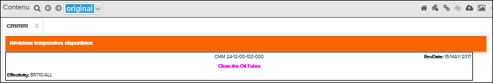
Lorsque vous sélectionnez la révision, la publication s'ouvre dans le volet Contenu. Par exemple:
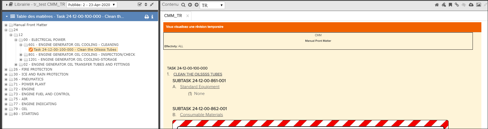
Basculez le  menu déroulant dans l'en-tête du volet
Contenu pour basculer entre la révision temporaire et la publication
originale.
menu déroulant dans l'en-tête du volet
Contenu pour basculer entre la révision temporaire et la publication
originale.
Faits saillants de la révision (KCA Builders uniquement)
- Dans la section Avant-propos de la Table des Matières,
sélectionnez Faits saillants de la révision. Par example:
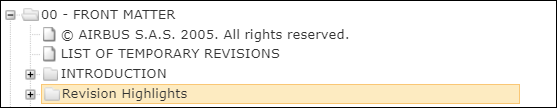
La page Aperçu des révisions s'ouvre dans le volet Contenu. Par example:
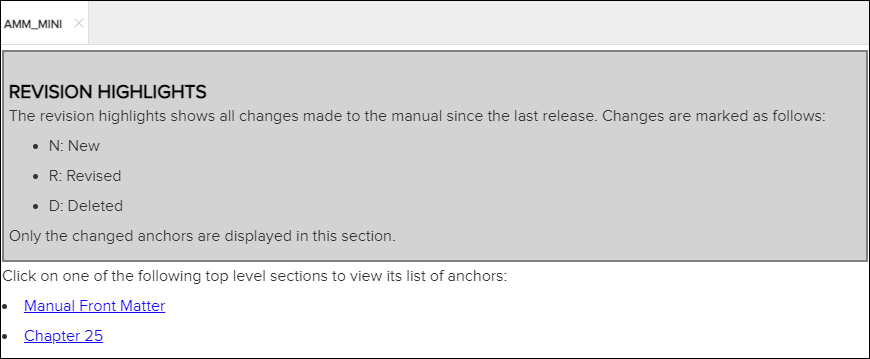
- Sélectionnez un lien pour examiner les modifications apportées à cette section. Par
exemple, ce contenu s'affiche lorsque vous cliquez sur le lien pour Chapter 25:
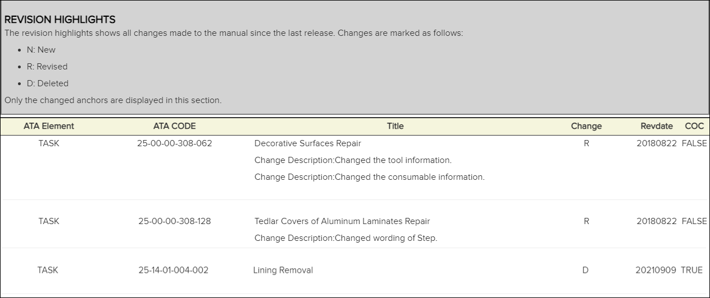
- ATA Element, ATA CODE, et Title fournissent des informations sur la révision.
- Change indique le type de modification effectuée: Nouveau (N), Révisé (R) ou Supprimé (D).
- Revdate affiche la date de révision.
- COC indique si le changement a été effectué par la compagnie aérienne (valeur = VRAI) ou était un changement OEM (valeur = FAUX).
Affichage du titre LEAP du texte PRE/POST/END pour le bulletin de service (SB)

Exemple de texte PRE/END PRE

Exemple de texte POST/END POST

Exemple de texte PRE/POST (Figure)
Balises de correction de non-conformité
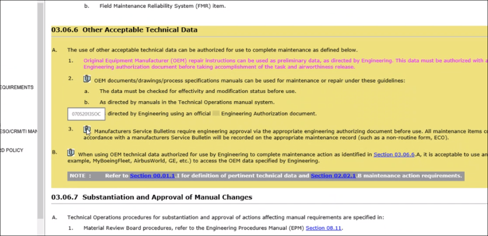
Exemple de trombones
Liens vers les éléments d'inspection requis (RII)
- Accédez à un bloc de Tâche ou de Page où
l'attribut RII a été inséré. Le lien RII
vers le GPM s''affiche en haut de la page. Par example:
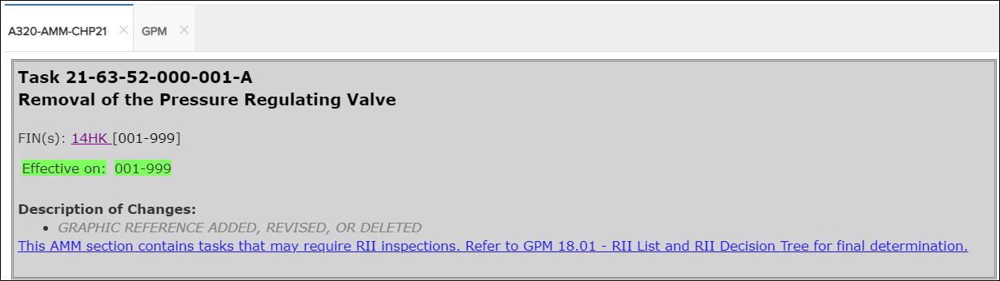
Lien GPM
- Sélectionnez le lien pour accéder à la section GPM visible dans le lien, cela affichera les informations relatives au RII.
- Le manuel GPM avec la section référencée apparaîtra. Par
example:
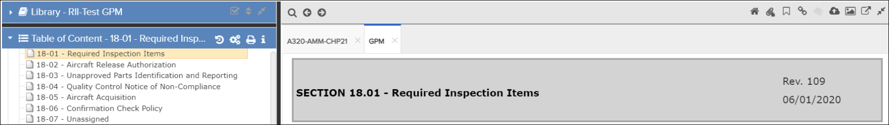
Manuel GPM
Référence de la carte de tâche (TC)
- Accédez à un bloc Tâche ou Page où
l'attribut TC a été inséré. Une référence
TC s'affichera en haut de la page à côté du numéro de
Tâche. Par example:
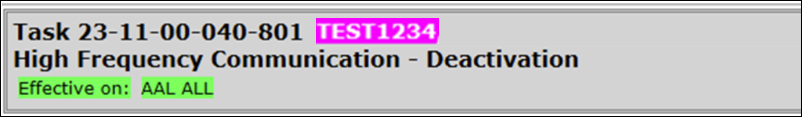
Référence TC
- Utilisez la référence pour accéder à la fiche de tâche associée.
Articles de rechange (données Airbus AIPC)
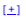
Développer pour afficher des détails supplémentaires sur l'article de rechange. Par example:
Détails de l'article de rechange
Si vous effectuez une Recherche en texte intégral ou Recherche du contenu (dans le volet Contenu), (dans le volet Contenu), les détails de l'élément de rechange sont développés lorsque vous cliquez sur un résultat de recherche. Tous les résultats sont également mis en surbrillance.
Utilisé avec les éléments (AIPC)
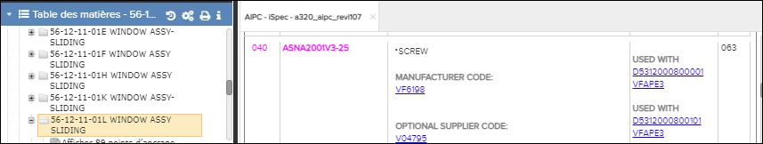
Utilisé avec l'article
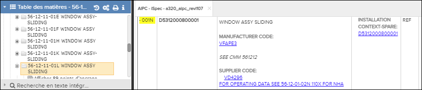
Utilisé avec l'article - Pièce cible
Attachements
Si un document contient des attachements (telles que des révisions temporaires ou du contenu supplémentaire), il sera indiqué par des bannières de notification en haut du document dans le volet Contenu. Lors de l'ouverture des attachements, ces dernières apparaissent dans de nouveaux onglets dans la fenêtre de Contenu. Reportez-vous à la section Afficher Attachement.
Liens Multimédia
La procédure pour gérer les liens multimédia dans le contenu dépend du format:
- Cliquer sur un lien multimédia qui pointe vers .ppt, .xls, .doc, .mkv, .3gp ouvrira un nouvel onglet et permettra à l'utilisateur de télécharger le fichier.
- Cliquer sur un lien multimédia qui pointe vers PDF ouvrira un PDF dans le nouvel onglet Contenu.
- Cliquer sur un lien multimédia qui pointe vers un format 3D pris en charge, tel que VRML, ouvrira le 3D dans la fenêtre Graphique . Si vous utilisez Internet Explorer ou Chrome, le graphique peut être affiché sans aucun plugin tiers. Si d'autres navigateurs sont utilisés, vous devrez installer le plugin CORTONA 3D Viewer sur le poste du client. Pour plus de détails, merci de se référer à Affichage d'un SIMIC/VRML 3D Graphique.
- Dans la liste du graphique dans la fenêtre graphique, Seules les images et les objets 3D seront affichés, car ils sont les seuls affichés dans la fenêtre graphique.
Prise en compte des Instructions de Sécurité (uniquement S1000D 4.1)

Après avoir acquitté les consignes de sécurité,vous verrez le texte "Vous avez lu les consignes de sécurité" et le contenu s'afficher.
Onglets Exigences préliminaires (Pilules / onglets)
Un style spécial a été mis en œuvre pour afficher les exigences préliminaires d'un module de données de procédure sous forme d'onglets dans la partie supérieure des documents. Par exemple:
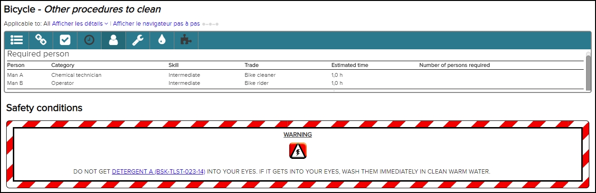
Onglets des exigences préliminaires - Aucune applicabilité
S'il existe des déclarations d'applicabilité dans les exigences préliminaires, le texte d'applicabilité apparaît en couleur. L'applicabilité des lignes de la table a un style différent de celui des onglets, sans applicabilité. Par exemple:
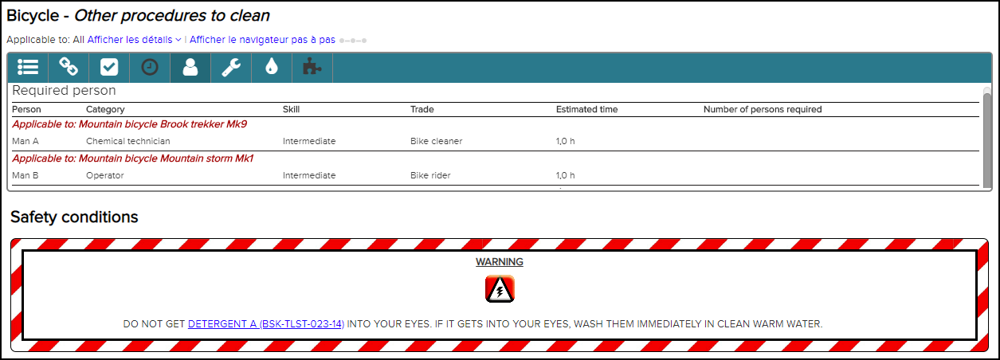
Onglets des exigences préliminaires - applicabilité

Onglets des exigences préliminaires - iSpec (EM)
Par défaut, les onglets sont fermés. L'exigence préliminaire est affichée directement sous les onglets lorsque vous cliquez dessus. Par exemple, cliquez sur l'icône Table des matières pour afficher la table des matières du document. Vous pouvez naviguer dans différentes parties du document en cliquant sur les liens de la table des matières. Après avoir visionné les informations, vous pouvez cliquer sur l'onglet pour les fermer.
Lorsque vous faites défiler le document, l'onglet reste affiche en haut du document.
Onglet Conditions préliminaires - Afficher les détails / Masquer les détails
Par défaut, les détails du pied de page ne sont pas visibles. Vous pouvez sélectionner l'option au-dessus du préliminaire En-tête des exigences pour afficher les détails du pied de page. Ces détails incluent:
- Applicable à l'information
- Information de sécurité
- Tampon de droits d'auteur avec info-bulle
- Nom du module de données
- Date de publication
Sélectionnez l'option pour masquer les détails du pied de page.
Onglet Prérequis - Afficher les étapes / Masquer les étapes
Par défaut, le chemin de navigation des étapes préliminaires et les boutons de navigation ne sont pas visibles. Vous pouvez sélectionner (navigateur étape par étape) l'option au-dessus de l'en-tête préliminaire de l'onglet Exigences pour afficher le chemin de navigation et boutons.
- Chemin de navigation des étapes préliminaires
Sélectionnez une étape pour passer à cette étape de la procédure.
- Boutons Précédent et Suivant
Sélectionnez les boutons précédent ou Suivant pour vous déplacer entre les étapes de la procédure.
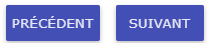
Sélectionnez l'option pour masquer le chemin de navigation.
Ce tableau répertorie les icônes / boutons que l’on peut trouver dans l’onglet.
| L'icône | Description |
|---|---|
| Afficher les détails / Masquer les détails | Basculez cette option pour afficher ou masquer les détails du pied de page. |
| Afficher les étapes / Masquer les étapes | Basculez cette option pour afficher ou masquer les étapes de la procédure. |
| Table des matières | Cliquez sur cette icône pour afficher la table des matières. Vous pouvez cliquer sur un lien spécifique pour accéder à ce sujet. |
| Références | Cliquez sur cette icône pour afficher et lire les conditions de sécurité. qui sont nécessaires avant de procéder. Vous pouvez cliquer un lien, le cas échéant, pour accéder à plus d'informations sur une condition spécifique. |
| Les Conditions préliminaires | Cliquez sur cette icône pour afficher et lire les conditions de sécurité. qui sont nécessaires avant de procéder. Vous pouvez cliquer un lien, le cas échéant, pour accéder à plus d'informations sur une condition spécifique. |
| Les Données de maintenance de production | Cliquez sur cette icône pour afficher les informations de base requises pour la planification et la préparation de la tâche. |
| Les Personnels & Compétences requises | Cliquez sur cette icône pour afficher des informations sur le niveau de compétence de la personne requise pour la tâche, le temps estimé pour réaliser la tâche et le nombre de personnes requises. |
| Les Outillages | Cliquez sur cette icône pour afficher les outillages requis. Vous pouvez cliquer sur le lien d'identification / de référence pour accéder à plus d'informations sur l'outillage requis. |
| Les Consommables | Cliquez sur cette icône pour afficher les consommables nécessaires. Vous pouvez cliquer sur le lien d'identification / de référence pour accéder à plus d'informations sur un Consommable spécifique. |
| Les rechanges | Cliquez sur cette icône pour afficher les pièces de rechange disponibles. Vous pouvez cliquer sur le lien d'identification / de référence pour accéder à plus d'informations sur une pièce de rechange spécifique. |
| Cette icône s’affiche lorsque vous cliquez sur un lien ne contenant aucune information supplémentaire. | |
| Sélectionnez une étape pour passer à cette étape dans la navigation. chemin. | |
|
|
Cliquez sur le bouton Précédent ou Suivant pour vous déplacer étapes de la procédure. |
Module de données de conteneur
Les documents S1000D peuvent faire référence à des modules de données de conteneurs qui peuvent contenir encore plusieurs références à des modules de données avec application différente. La gestion des modules de données de conteneur dans Pinpoint dépend des données. Dans la publication A350, s'il n'y a qu'un seul document applicable dans le conteneur, vous serez directement routé à ce sujet. S'il y a plusieurs documents applicables, Pinpoint ouvrira le conteneur à la place. Dans les types de données non-A350, le conteneur est toujours affiché.
Module de données de processus
Le module de données de processus contient des structures de traitement interactives permettant de séquencer d'autres modules de données ou étapes à l'intérieur de celui-ci. Le séquençage est basé sur des informations d'état dynamiques ou statiques et est géré par un composant logiciel appelé Logic Engine.
- Un champ de saisie
- Bouton Push
- Soumettre
- Annuler
- Un bouton radio
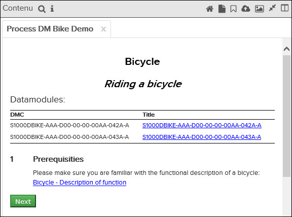
- Cliquez sur le bouton Next dans le module de données à naviguer à la prochaine nœud.
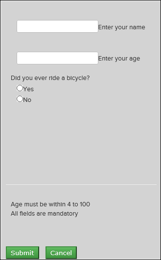
- Entrez vos coordonnées dans les zones de saisie de texte.
- Sélectionnez le choix de menu (dans cet exemple, Oui ou Non).Remarque : Le choix du menu est présenté comme un bouton radio.
- Cliquez sur le bouton Soumettre Remarque : Cliquez sur le bouton Annuler pour effacer l'entrée et revenir à la page précédente.
- La séquence continue à s'exécuter jusqu'à ce que vous sélectionniez la bonne
réponse.Vous pouvez ensuite passer au nœud suivant, si disponible.
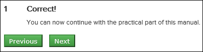
- Si vous sélectionnez une mauvaise réponse, le nombre de mauvaises réponses est
incrémenté.La séquence se répète jusqu'à ce que vous sélectionniez la bonne réponse.
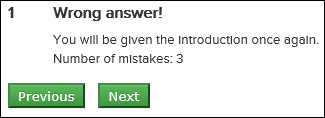
- Le dernier nœud de la séquence n'aura que le bouton Précédent. Lien dmRef dans les modules de données de processus.
Lien dmRef dans les modules de données de processus
Lorsque vous cliquez sur un lien dmRef dans un module de donnée de processus, il s'ouvre dans un nouvel onglet.